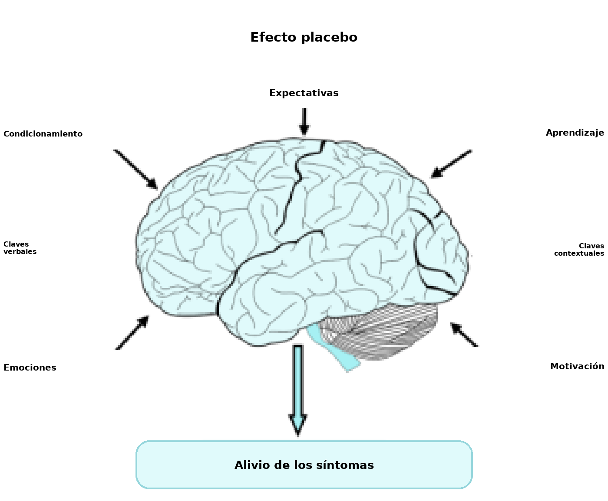
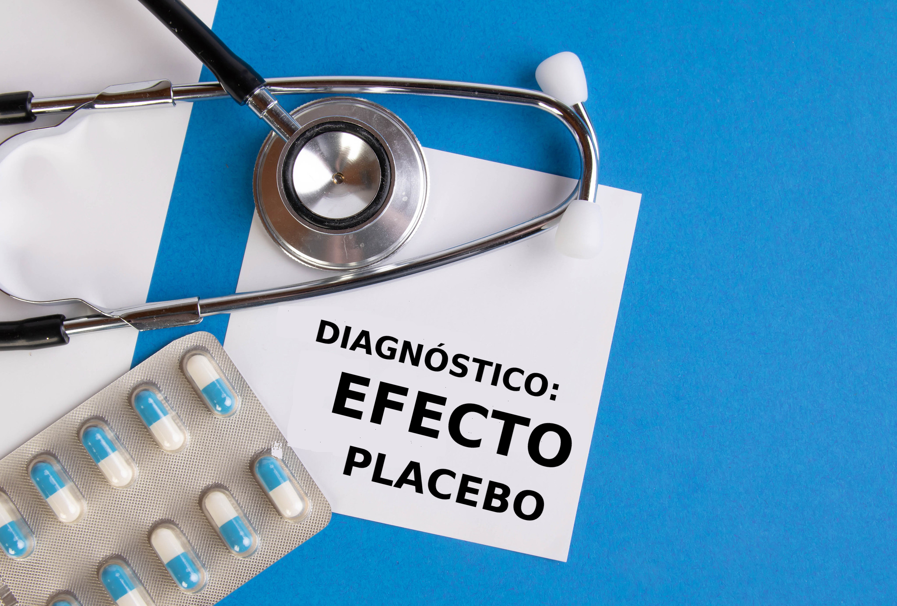
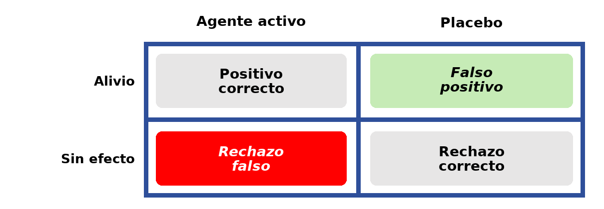

Placebos: una perspectiva psicológica y biológica
Objetivos de aprendizaje
- Conocer la definición del efecto placebo.
- Comprender los mecanismos biológicos y psicológicos del efecto placebo.
- Reconocer la importancia de los placebos en el diseño de los ensayos clínicos y sus consideraciones éticas.
- Comprender el aporte de los placebos al estudio de trastornos complejos, como el dolor y la depresión.
Definición de placebo
El término placebo, que proviene del latín «yo complaceré», se usa en la medicina actual para describir una sustancia o un tratamiento simulado que no tiene un efecto fisiológico directo evidente o conocido. Los ejemplos más frecuentes de placebo incluyen un comprimido inerte (por ejemplo, un comprimido de azúcar) o la inyección, por vía intramuscular o intravenosa, de una solución de control (por lo general, solución salina), pero también pueden incluir un procedimiento quirúrgico. Sin embargo, esos tratamientos inertes pueden tener efectos y beneficios medibles en grupos de pacientes, por el contexto en el que se administran y por la expectativa. Esos efectos no se limitan a la evaluación subjetiva del alivio de los síntomas: también pueden incluir cambios fisiológicos medibles, como alteraciones de la secreción gástrica, dilatación de los vasos sanguíneos y cambios hormonales.
El efecto placebo
Un tratamiento o un procedimiento médico se asocia con un contexto psicosocial complejo que puede afectar el resultado de la terapia (véase la Figura 6.16). Para determinar los efectos del contexto psicosocial sobre el paciente, es necesario eliminar la acción específica del tratamiento y reproducir el contexto en el que se administra el tratamiento activo. Así, se da un placebo con el que el paciente cree estar recibiendo una terapia eficaz y, por lo tanto, espera experimentar sus beneficios, como el alivio de los síntomas. El efecto placebo, o la respuesta placebo, es el resultado que sigue a esta administración. Es esencial que la administración ocurra dentro del diseño de un ensayo clínico (véase el recuadro) para evaluar la eficacia potencial de los tratamientos nuevos y eliminar la influencia de la expectativa del paciente sobre el resultado, ya que los efectos de un fármaco pueden estar influidos por la historia del paciente y por sus creencias o expectativas acerca del fármaco o del tratamiento en desarrollo.
En parte, el efecto de un placebo puede explicarse como resultado del condicionamiento clásico. Por ejemplo, en el alivio del dolor (véase el recuadro), si hay una historia de inyecciones que alivian el dolor (por ejemplo, con morfina), por asociación la jeringa y el contexto de la inyección pueden adquirir cierta capacidad de aliviar el dolor. Es decir, se forma una asociación entre el procedimiento (estímulo condicionado), el fármaco (estímulo incondicionado) y el alivio del dolor (respuesta incondicionada). Sin embargo, el condicionamiento no puede explicar por completo el efecto placebo en todas las situaciones. Por ejemplo, si a una persona se le dice que cabe esperar alivio del dolor, puede haber cierta tendencia a experimentarlo. Una gran cantidad de estudios de neuroimagen y de neurobiología informa cambios en la actividad y en la función cerebral después de la administración de un placebo, lo que respalda la idea de una base biológica del efecto placebo.

Dolor
El dolor es una experiencia muy compleja e individual, que da lugar a respuestas conductuales, químicas, hormonales y neuronales. Las personas pueden experimentar un dolor ocasional, que activa los sistemas nerviosos autónomo, central y periférico, y también un dolor crónico a lo largo de meses e incluso años. El dolor crónico afecta de manera considerable la calidad de vida de las personas afectadas, y hay una demanda de desarrollar terapias nuevas y eficaces. Existen distintos enfoques de tratamiento para el dolor, entre ellos los medicamentos, las terapias físicas (por ejemplo, el tratamiento con calor o frío, el ejercicio y el masaje) y las terapias complementarias (por ejemplo, la acupuntura y la meditación). Se informó que los efectos placebo actúan como aliviadores del dolor en ciertos grupos de pacientes y que pueden ofrecer una opción terapéutica viable (Miller & Colloca, 2009).
Los estudios de neuroimagen funcional muestran que los opioides y los placebos activan las mismas regiones encefálicas, y que ambos tratamientos reducen la actividad de las regiones encefálicas que responden al dolor, incluida la corteza cingulada (Wager et al., 2004). Un hallazgo coherente es que algunas personas experimentan alivio con un placebo y otras no. Las personas que responden al placebo muestran una mayor activación de las regiones encefálicas con receptores de opioides que quienes no responden, lo que implica todavía más a los opioides endógenos en el efecto placebo. A menudo se informó que los opioides inducen relajación, lo que puede explicar la sensación de alivio del dolor después de un tratamiento con placebo. Sin embargo, también hay evidencia sustancial de que los placebos pueden aliviar el dolor mediante la reducción de las emociones negativas (es decir, las sensaciones de miedo y de ansiedad) asociadas con el dolor, en lugar de reducir la sensación de dolor en sí. Por ejemplo, el tratamiento con placebo disminuye la activación de la corteza cingulada, pero no la de la corteza somatosensitiva. Al igual que el dolor mismo, el alivio de los síntomas dolorosos es complejo, y los placebos pueden ser un componente importante del enfoque terapéutico para tratar el dolor en ciertas personas.
Mecanismos: mecanismos psicológicos
Desde la perspectiva psicológica, el efecto placebo se atribuyó tradicionalmente o bien a la cognición consciente —por ejemplo, las expectativas de los pacientes— o bien a la acción de mecanismos automáticos de aprendizaje básico, como el condicionamiento clásico o pavloviano. La evidencia acumulada en las últimas décadas sugiere que la cognición consciente y el condicionamiento configuran distintas instancias del efecto placebo, y que pueden interactuar para determinar el efecto (por ejemplo, Stewart-Williams & Podd, 2004). Aquí exploramos dos versiones del enfoque de la cognición consciente: la más difundida, la teoría de la expectativa, y un enfoque prometedor que caracteriza algunas instancias del efecto placebo como un tipo particular de error en la toma de decisiones. Después veremos cómo el condicionamiento da cuenta del efecto placebo, a partir de la investigación hecha con animales no humanos y de cómo se traslada a la práctica clínica en seres humanos.
Cognición consciente: teoría de la expectativa

Un placebo produce un efecto porque el paciente espera que lo produzca. La explicación por la expectativa considera varios factores que, se sabe, configuran las expectativas de quien lo recibe, entre ellos la relación terapéutica y la autoridad del profesional que administra el placebo. Otros factores que contribuyen al desarrollo de las expectativas son la marca y el costo de la medicación. Por ejemplo, el uso de un placebo fue más eficaz para reducir la cefalea cuando se usó el nombre comercial para rotular los comprimidos que cuando se usó un rótulo genérico; además, se atribuyeron menos efectos adversos a los comprimidos con el nombre comercial (Faasse et al., 2016). Del mismo modo, el color de los comprimidos también puede contribuir a configurar las expectativas de quien los recibe: el rojo y el naranja se asocian con un efecto estimulante, mientras que el azul y el verde tienden a asociarse con efectos sedantes (De Craen et al., 1996).
La pregunta clave desde esta perspectiva es cómo contribuyen las expectativas al efecto placebo. Se propusieron distintos mecanismos. Lundh (2000) sugirió que las expectativas positivas contribuyen a reducir la ansiedad de quien recibe el placebo. Está bien establecido que el estrés y la ansiedad tienen un efecto adverso sobre diversos procesos fisiológicos y aumentan el número y la intensidad de los síntomas que informan los pacientes. El uso de placebos, al reducir los niveles de ansiedad, puede contribuir a aliviar la sintomatología (véase Stewart-Williams & Podd, 2004). Las expectativas también pueden contribuir al efecto placebo al cambiar otras cogniciones: la expectativa de mejoría inducida por el placebo, al promover una sensación de control, puede permitirle a quien lo recibe afrontar el dolor de manera más positiva; el paciente puede ser más propenso a dejar de lado los pensamientos negativos y a interpretar los estímulos ambiguos de forma más favorable. Otra manera en que las expectativas positivas pueden mediar el efecto placebo es cambiando la conducta misma de quien lo recibe: la expectativa de una mejoría puede llevar al paciente a retomar sus rutinas cotidianas, lo que mejoraría el estado de ánimo y lo distraería de los síntomas, y así se reduciría la experiencia de dolor (Peck & Coleman, 1991; Turner et al., 1994).
Cognición consciente: toma de decisiones
Se plantea que los pacientes tratados ya sea con un agente terapéutico activo o con un placebo quedan ante una decisión binaria: ¿el síntoma se alivió o no (Allan & Siegel, 2002)? Esta puede ser una pregunta difícil en algunas situaciones en las que el síntoma, por ejemplo un dolor periódico, surge de la interpretación que hace el encéfalo de la entrada que recibe de los receptores sensitivos y, como se comentó arriba, está mediada por factores psicológicos. La intensidad relativa del dolor fluctuará a lo largo del tiempo según si el paciente está distraído o plenamente concentrado en el síntoma, por ejemplo. Para decidir si experimentan o no una mejoría, los pacientes tienen que considerar si la intensidad promedio del dolor disminuyó. Quizá sí, o quizá el nivel de dolor sea similar al que sentían antes de que se administrara el tratamiento. Al juzgar la intensidad relativa de la sensación, el paciente enfrenta una situación ambigua. La reducción de la sintomatología es una señal que se presenta contra un entorno ruidoso (la intensidad cambiante de los síntomas a lo largo del tiempo). Podemos aplicar los principios de la teoría de la detección de señales (TDS; Signal Detection Theory, SDT, en inglés; Tanner & Swets, 1954) para caracterizar esta instancia del efecto placebo. Podemos resumir todos los resultados posibles con referencia al «problema de decisión del paciente» (véase la Tabla 1).
El resultado dependería del criterio usado, que puede ser liberal (cualquier cambio se identificaría como la señal y, por lo tanto, el paciente tiende a incurrir en un falso positivo y a experimentar alivio) o conservador (la señal no se detectará con facilidad y el paciente tiende a incurrir en un rechazo falso, y a experimentar la ausencia de efecto). La adopción de un criterio liberal o conservador dependería de las consecuencias percibidas de cada uno de los errores posibles: un riesgo alto de rechazos falsos lleva a un criterio liberal; un riesgo alto después de un falso positivo contribuye a adoptar un criterio más conservador. En el contexto clínico, un rechazo falso podría equivaler a afirmar que un fármaco eficaz y probado no es eficaz. Eso cuestionaría el saber aceptado y también la autoridad del médico que administra el tratamiento. Para evitar esta situación potencialmente incómoda, quien recibe el tratamiento podría adoptar un criterio liberal, lo que aumenta la probabilidad de un falso positivo. En muchos casos, un paciente al que se le da un placebo preferiría tomar la decisión, o cometer el «error», que es deferente con el saber establecido (la ciencia) y que complace al médico y a su familia, y experimentar alivio de los síntomas en ausencia de un agente terapéutico activo. Esto llevaría a una instancia del efecto placebo.

Tratado con un «agente activo» o con un «placebo», el paciente puede experimentar «alivio» del síntoma o «ausencia de efecto». El resultado puede denominarse positivo correcto cuando se administró un agente activo y el paciente experimenta alivio. Del mismo modo, en ausencia de un agente terapéutico activo (placebo), la ausencia de efecto sería un rechazo correcto. En esta situación, los pacientes también pueden equivocarse: no experimentar alivio cuando se los trata con un agente terapéutico produciría un rechazo falso; por otro lado, experimentar alivio de los síntomas en ausencia de un agente activo (tratamiento con un placebo) sería un falso positivo. Incurrir en un falso positivo, un error frecuente y en algunos casos deseable, constituye el efecto placebo.
Condicionamiento: el placebo mediado por el aprendizaje
En esta sección nos centramos en otra instancia del efecto placebo, que surge al emparejar dos sucesos: las claves situacionales en las que tiene lugar un tratamiento (el contexto físico, la forma de administración, el personal de salud que lo administra, etc.) y el agente activo que tiene un efecto terapéutico. El efecto terapéutico es una respuesta automática, incondicionada, al agente activo o al fármaco. La experiencia repetida del fármaco en presencia de las claves situacionales promueve el desarrollo del condicionamiento pavloviano, por el cual esas claves adquieren la capacidad de provocar una respuesta terapéutica condicionada: en presencia de las claves situacionales, incluso en ausencia del agente activo, el paciente experimentará alivio de los síntomas. Esta respuesta terapéutica condicionada a las claves situacionales es una instancia del efecto placebo que puede usarse para reducir la dosis del agente activo (algo especialmente relevante en fármacos con efectos adversos indeseables) en distintos contextos. Describiremos brevemente un par de ejemplos del uso del efecto placebo condicionado en el tratamiento de enfermedades autoinmunitarias y en el tratamiento del dolor.
El condicionamiento de los efectos farmacológicos de los fármacos tiene una larga historia. Pavlov (1927, p. 35) describió experimentos tempranos de Krylov en los que se inyectaba morfina de forma repetida a perros, lo que produce náuseas, salivación, vómitos y sueño. Después de 5 o 6 inyecciones de morfina en un entorno experimental particular, los preparativos de la inyección bastaban para producir todos estos síntomas como respuesta, no al efecto del fármaco en el torrente sanguíneo, sino a la exposición a los estímulos externos que antes precedían a la inyección de morfina. Las respuestas farmacológicas condicionadas se usaron con éxito en seres humanos sometidos a un tratamiento de inmunodepresión. Giang et al. (1996) trataron a 10 personas con esclerosis múltiple (EM) con ciclofosfamida, un inmunosupresor eficaz que ayuda a controlar los síntomas de la EM, pero que tiene efectos adversos graves (por ejemplo, mayor riesgo de infección y de enfermedad cardiovascular, y depleción de la médula ósea). Las personas participantes ingerían un jarabe con sabor a anís antes de cada administración del fármaco inmunosupresor. Más tarde se les daba el jarabe con una dosis pequeña e ineficaz del fármaco. Ocho de las diez personas mostraron una clara respuesta inmunosupresora condicionada, lo que sugiere que es posible reducir la dosis del fármaco administrada durante el tratamiento para mantener a raya los efectos adversos.
Las respuestas farmacológicas condicionadas también pueden usarse en el tratamiento del dolor. Los opioides se usan para bloquear las señales de dolor entre el encéfalo y el cuerpo, y suelen prescribirse para tratar el dolor moderado a grave. Sin embargo, se activa un segundo conjunto de respuestas (efectos adversos indeseables) que contribuyen al desarrollo de tolerancia, lo que reduce la eficacia del fármaco y exige dosis mayores para lograr el efecto terapéutico deseado. Usados en dosis altas, los opioides pueden llevar al desarrollo de adicción y de hiperalgesia inducida por opioides (HIO), que empeoran el bienestar de los pacientes (por ejemplo, Holtman & Jellish, 2012). Cuando se administra un fármaco analgésico (como un opioide) a una persona con dolor, el fármaco produce una reducción del dolor, un efecto terapéutico que resulta muy gratificante. Las presentaciones repetidas del agente terapéutico activo en un contexto particular permitirían que el contexto active una respuesta terapéutica condicionada que reduce el dolor en ausencia del agente terapéutico activo. Esto podría ayudar a reducir la dosis de los fármacos usados para tratar el dolor, y a mantener los opioides eficaces en dosis bajas y sin efectos adversos.
Se presentó evidencia persuasiva del desarrollo de analgesia condicionada en ratones. Guo et al. (2010) trataron ratones con morfina o con aspirina antes de colocarlos en una placa caliente. Los animales expuestos a la placa caliente a 55 °C muestran una respuesta de retirada de la pata; el tratamiento con un analgésico retrasa de forma significativa esa respuesta, lo que evidencia las propiedades analgésicas del fármaco. Después del entrenamiento con morfina o con aspirina, los animales mostraron evidencia de una respuesta analgésica condicionada al retrasar la retirada de la pata cuando se los exponía a la placa caliente después de la inyección de una solución salina: una instancia del efecto placebo mediado por el condicionamiento. Es interesante que, cuando se trató a los animales con un antagonista opioide (naloxona), la analgesia condicionada desapareció en los animales tratados al principio con morfina, pero no en los tratados con aspirina. Esto es coherente con la observación de que, en los seres humanos, la analgesia placebo se asocia con la liberación de opioides endógenos (Eippert et al., 2009), lo que indica la importancia de la señalización opioidérgica en la modulación del dolor y en el efecto placebo. Cabe mencionar que la psicodinámica y la farmacodinámica de los opioides son muy complejas y todavía no se comprenden por completo. En algunos casos, emparejar claves situacionales con opioides puede llevar al desarrollo de una respuesta condicionada opuesta a la respuesta terapéutica deseada (una respuesta de hiperalgesia condicionada; véase Siegel, 2002, para una revisión completa). El desarrollo de la hiperalgesia condicionada excede el alcance de este capítulo, pero conviene tener presente la necesidad de identificar los parámetros que promueven las respuestas condicionadas terapéuticas y previenen el desarrollo de una hiperalgesia condicionada que podría empeorar la afección de los pacientes en el ámbito clínico.
Mecanismos biológicos del efecto placebo
Para explicar los cambios que se observan en la función de ciertas áreas encefálicas después de la administración de un placebo, tiene que existir un mecanismo de acción biológico. En cuanto a los efectos placebo, se los describe de forma típica como mediados por mecanismos opioides o no opioides. El papel de los opioides en el efecto placebo quedó establecido por la observación de que, en algunas condiciones, el efecto se anula con una inyección previa del antagonista opioide naloxona. En el efecto placebo, la dopamina y los opioides se activan en varias regiones encefálicas (por ejemplo, el núcleo accumbens) de un modo que se corresponde con la expectativa de efectos beneficiosos. Si se comparan distintas personas, una respuesta alta al placebo se asocia con una activación alta de estas sustancias neuroquímicas. Hay receptores de opioides en regiones de la neuromatriz del dolor cuya activación disminuye en correspondencia con el efecto placebo, por ejemplo la corteza cingulada anterior y la ínsula (Kim et al., 2021). Las respuestas placebo mediadas por opioides también se extienden más allá de las vías del dolor. Se informa que la depresión respiratoria inducida por el placebo (un efecto adverso placebo condicionado) y la disminución de la frecuencia cardíaca y de la actividad β-adrenérgica pueden revertirse con naloxona, lo que demuestra la participación de mecanismos opioides en otros procesos fisiológicos, como la función respiratoria y la cardiovascular.
Sin embargo, el sistema opioide no es la única vía implicada en el efecto placebo. La administración de un placebo también aumenta la liberación y la captación de dopamina, y los receptores de dopamina se activan en anticipación del beneficio cuando se administra un placebo. Esto sugiere que el sistema dopaminérgico puede subyacer a la expectativa de recompensa que sigue a la administración de un placebo (Scott et al., 2008). Además, los efectos placebo que no están mediados por opioides pueden bloquearse con el antagonista del receptor cannabinoide CB1 (Benedetti et al., 2011), lo que sugiere un papel del sistema endocannabinoide. También se informa que la genética participa en la explicación biológica del efecto placebo, en tanto puede influir en la intensidad del efecto. Por ejemplo, los pacientes con receptores de opioides menos activos tienen menos probabilidad de responder al placebo, mientras que los pacientes con un metabolismo de la dopamina reducido, y por lo tanto con niveles más altos de dopamina en el encéfalo, tienen más probabilidad de experimentar un efecto placebo intenso (Hall et al., 2015). Los tratamientos con placebo también pueden afectar respuestas hormonales mediadas por el control del prosencéfalo sobre el sistema hipotálamo-hipófiso-hormonal.
Aunque otras afecciones médicas se investigaron desde una perspectiva neurobiológica, los mecanismos del placebo en esas afecciones no se comprenden tan bien como en el dolor y la analgesia. Por ejemplo, la administración de un placebo a personas con enfermedad de Parkinson induce liberación de dopamina en el estriado, y cambios en el disparo de neuronas de los núcleos basales (también llamados ganglios basales) y del tálamo. Además, ocurren cambios en la actividad metabólica del encéfalo después de la administración de un placebo en la depresión (véase el recuadro) y después de manipulaciones de la expectativa en la adicción.
Depresión
Los efectos placebo en los ensayos clínicos que exploran posibles terapias para el tratamiento de la depresión se informan con frecuencia: muchos ensayos no logran informar un beneficio estadísticamente significativo de un tratamiento nuevo en comparación con el que se observa en el grupo placebo. Esto puede atribuirse a los beneficios del tratamiento con placebo, y no simplemente a un tratamiento ineficaz. De hecho, se informó que, en los ensayos clínicos para la depresión mayor, aproximadamente el 25 % del beneficio informado por los pacientes se debe a la medicación activa, el 25 % a otros factores, como la remisión espontánea de los síntomas, y el 50 % al efecto placebo.
El conocimiento que en un principio se obtuvo de los estudios sobre el dolor ayudó a revelar que el sistema de opioides endógenos, importante en la regulación de la respuesta de estrés y de la regulación emocional, es un mediador importante del placebo. Como este sistema está desregulado en la depresión, es plausible que los opioides medien el efecto placebo que se observa en la depresión. Los estudios mostraron que las personas con mayor actividad de los receptores de opioides en áreas del encéfalo como la corteza cingulada anterior, el núcleo accumbens y la amígdala —todas áreas implicadas en la regulación del estrés emocional y en la depresión— tienen más probabilidad de experimentar alivio de los síntomas depresivos después de un tratamiento con placebo (Zubieta et al., 2005).
Ética y el efecto nocebo
En los ensayos clínicos, el placebo es esencial para el diseño de los experimentos que evalúan la eficacia de medicamentos nuevos, porque elimina la influencia de la expectativa por parte del paciente. Este grupo de control es idéntico al grupo experimental en todos los aspectos, pero los pacientes y el personal médico que administra el tratamiento desconocen si están recibiendo el tratamiento activo o el placebo. Esas precauciones aseguran que los resultados de un tratamiento dado no estén influidos por prejuicios explícitos o implícitos del paciente o de quien observa. El supuesto es que, para examinar de verdad los efectos biológicos potenciales de un tratamiento y excluir la influencia del contexto psicosocial, hay que ocultarle al paciente si está recibiendo un tratamiento activo o un placebo.
En cuanto a la respuesta placebo, a menudo se puede caracterizar a una persona como alguien que responde o que no responde. Es importante considerar las implicaciones éticas de esta caracterización. Por ejemplo, puede ser apropiado considerar dirigir los tratamientos con placebo hacia quienes responden, porque en ellos producen una respuesta positiva, y también puede ser apropiado considerar excluir a quienes responden de los ensayos clínicos para que los resultados no se vean comprometidos. El diseño de los ensayos clínicos es importante (véase el recuadro): si, por ejemplo, durante un ensayo se encuentra que un tratamiento nuevo es eficaz, se consideraría no ético negar a cualquier participante de ese ensayo el acceso al tratamiento eficaz. Por eso, los ensayos clínicos suelen diseñarse en bloques, en los que los pacientes reciben bloques alternados de tratamiento activo y de placebo, para que todos tengan la misma posibilidad de beneficiarse con un tratamiento nuevo.
Un fenómeno menos comprendido es el efecto nocebo, en el que las expectativas negativas sobre un tratamiento disminuyen el efecto terapéutico experimentado o aumentan la experiencia de efectos adversos. Se mostró que la administración del péptido colecistocinina (CCK) participa en la hiperalgesia nocebo al inducir mecanismos de ansiedad anticipatoria, mientras que el bloqueo de la CCK reduce los efectos nocebo (Benedetti et al., 1997; https://pubmed.ncbi.nlm.nih.gov/9211474/). Se encontró una desactivación de la dopamina en el núcleo accumbens durante la hiperalgesia nocebo, y los estudios de neuroimagen mostraron la activación de áreas encefálicas distintas de las que se activan durante un efecto placebo, entre ellas el hipocampo y regiones implicadas en la ansiedad anticipatoria (Finniss & Fabrizio, 2005).
El papel del placebo en el diseño de los ensayos clínicos
El «descubrimiento» de un fármaco o un tratamiento nuevo suele ocurrir de una de tres maneras: el redescubrimiento del uso de productos naturales, la observación accidental de un efecto inesperado de un fármaco, o la síntesis de compuestos conocidos o nuevos. En todos los casos, una sustancia tiene que atravesar varias etapas para cumplir los requisitos de autorización del país correspondiente, de modo que ese tratamiento pueda aprobarse y, después, comercializarse. Las etapas iniciales del desarrollo de un fármaco o un tratamiento suelen incluir una síntesis extensa del fármaco (si corresponde), su caracterización química y una serie de estudios preclínicos o en animales para establecer la eficacia potencial y la seguridad del tratamiento. Los fármacos o tratamientos que se consideran merecedores de investigación clínica atraviesan tres fases de ensayo clínico, y es importante considerar el papel del placebo en el diseño de un ensayo clínico:
- Fase I. Involucra a voluntarios sanos y busca especificar las reacciones humanas, en términos de fisiología y de bioquímica, a un fármaco, además de determinar su seguridad.
- Fase II. Involucra a pacientes con el trastorno al que apunta el fármaco o el tratamiento nuevo, y busca determinar la eficacia de ese fármaco.
- Fase III. Amplía la fase II al aumentar el número de pacientes del ensayo. Estos ensayos suelen estar menos controlados que los de fase II, porque tienden a realizarse en varios centros e incluso en varios países.
Los ensayos clínicos normalmente se realizan asignando al azar a los pacientes a grupos de tratamiento, que pueden variar en la dosis recibida y en si el paciente recibe un tratamiento activo o un placebo. Esos ensayos se denominan ensayos controlados aleatorizados (ECA). Un estudio doble ciego es aquel en el que ni el paciente ni el personal médico saben a qué grupo (es decir, tratamiento activo o placebo) fue asignado el paciente. Los tratamientos y los placebos se fabrican de modo que se vean idénticos y se codifican para ocultar su identidad. Tanto las expectativas de la persona participante como las de quien conduce el experimento pueden influir en los efectos del fármaco que la persona experimenta. Aunque el diseño más simple consiste en asignar a los pacientes un tratamiento activo o un placebo, por consideraciones éticas la mayoría de los ensayos se basan en un diseño en bloques, en el que cada participante recibe bloques de tratamiento activo o de placebo. Estos diseños pueden ayudar a separar los efectos del placebo de los del tratamiento. Sin embargo, a medida que avanza el ensayo, la respuesta observada en el grupo placebo puede deberse a otros factores, como el curso natural de la enfermedad y las fluctuaciones de los síntomas, lo que dificulta distinguir una respuesta placebo genuina.
Conclusiones
Hay evidencia sólida de que los efectos placebo son reales y de que incluso pueden tener potencial terapéutico. Los efectos placebo están mediados por procesos diversos, que pueden incluir el aprendizaje, las expectativas y la cognición social, y están mediados por mecanismos biológicos. Es importante considerar el aporte de los efectos placebo en el diseño y la interpretación de los ensayos clínicos. Los placebos pueden tener un efecto terapéutico relevante y deberían seguir estudiándose para comprender del todo su potencial.
Ideas clave
- Aunque los placebos no contienen una sustancia activa que produzca un efecto biológico, pueden producir una respuesta. Por eso, es importante considerarlos en el diseño de los ensayos clínicos para determinar el efecto verdadero de un fármaco o un tratamiento biológicamente activo.
- El efecto placebo puede ser de naturaleza psicológica o fisiológica, y puede observarse en seres humanos (por lo general, en contextos médicos) y en animales no humanos (por lo general, en un contexto de investigación). Por ejemplo, el condicionamiento farmacológico provoca efectos placebo intensos tanto en seres humanos (por ejemplo, Amanzio & Benedetti, 1999; Olness & Ader, 1992) como en animales (por ejemplo, ratones; véase Guo et al., 2010).
- El efecto placebo se investigó de forma extensa, y el panorama que surge sugiere que no hay una única respuesta placebo, sino muchas, con distintos mecanismos en juego en una variedad de afecciones, intervenciones y sistemas (véase Benedetti, 2008, para una revisión completa).
Referencias y lecturas complementarias
Ader, R. (1997). The role of conditioning in pharmacotherapy. In A. Harrington (Ed.), The Placebo Effect (pp. 138-165). Harvard University Press.
Allan, L.G., & Siegel, S. (2002). A signal detection theory analysis of the placebo effect. Evaluation & the Health Professions, 25(4), 410-420. https://doi.org/10.1177/0163278702238054
Amanzio, M., & Benedetti, F. (1999). Neuropharmacological dissection of placebo analgesia: expectation-activated opioid systems versus conditioning-activated specific subsystems. Journal of Neuroscience, 19(1), 484-494. https://doi.org/10.1523%2FJNEUROSCI.19-01-00484.1999
Benedetti, F., Amanzio, M., Casadio, C., Oliaro, A,. & Maggi, G. (1997). Blockade of nocebo hyperalgesia by the cholecystokinin antagonist proglumide. Pain, 71(2), 135-40. https://doi.org/10.1016/s0304-3959(97)03346-0
Benedetti, F. (2008). Placebo effects: understanding the mechanisms in health and disease. Oxford University Press. https://doi.org/10.1093/acprof:oso/9780199559121.001.0001
Benedetti, F., Amanzio, M., Rosato, R., & Blanchard, C. (2011). Nonopioid placebo analgesia is mediated by CB1 cannabinoid receptors. Nature Medicine, 17, 1228-1230. https://doi.org/10.1038/nm.2435
Colloca, L., Benedetti, F. (2005). Placebos and painkillers: Is mind as real as matter? Nature Reviews Neuroscience, 6, 545-552. https://doi.org/10.1038/nrn1705
De Craen, A.J., Roos, P.J., De Vries, A.L., & Kleijnen, J. (1996). Effect of colour of drugs: Systematic review of perceived effect of drugs and of their effectiveness. British Medical Journal, 313(7072), 1624-1626. https://doi.org/10.1136/bmj.313.7072.1624
De Hower, J. (2018). A functional-cognitive perspective of the relation between conditioning and placebo research. International Review of Neurobiology, 138, 95-111. https://doi.org/10.1016/bs.irn.2018.01.007
Faasse, K., Martin, L.R., Grey, A., Gamble, G., & Petrie, K.J. (2016). Impact of brand or generic labeling on medication effectiveness and side effects. Health Psychology 35(2), 187-90. https://doi.org/10.1037/hea0000282
Finniss, D.G., Fabrizio, B. (2005). Mechanisms of the placebo response and their impact on clinical trials and clinical practice. Pain, 114(1-2), 3-6. https://doi.org/10.1016/j.pain.2004.12.012
Giang, D.W., Goodman, A.D., Schiffer, R.B., Mattson, D.H., Petrie, M., Cohen, N., & Ader, R. (1996). Conditioning of cyclophosphamide-induced leukopenia in humans. Journal of Neuropsychiatry and Clinical Neurosciences, 8(2), 194-201. https://doi.org/10.1176/jnp.8.2.194
Guo, J.Y., Wang, J.Y., & Luo, F. (2010). Dissection of placebo analgesia in mice: The conditions for activation of opioid and non-opioid systems. Journal of Psychopharmacology, 24(10), 1561-1567. https://doi.org/10.1177/0269881109104848
Hall, K.T., Loscalzo, J., Kaptchuk, T.J. (2015). Genetics and the placebo effect: The placebome. Trends in Molecular Medicine, 21,(5) 285-294. https://doi.org/10.1016/j.molmed.2015.02.009
Holtman Jr, J.R., & Jellish, W.S. (2012). Opioid-induced hyperalgesia and burn pain. Journal of Burn Care & Research, 33(6), 692-701. https://doi.org/10.1097/bcr.0b013e31825adcb0
Kim, D., Chae, Y., Park, H.-J., & Lee, I.-S. (2021). Effects of chronic pain treatment on altered functional and metabolic activities in the brain: A systematic review and meta-analysis of functional neuroimaging studies. Frontiers in Neuroscience, 15, https://doi.org/10.3389/fnins.2021.684926
Lundh, L.G. (2000). Suggestion, suggestibility, and the placebo effect. Hypnosis International Monographs, 4, 71-90.
Miller, F.G., & Colloca, L. (2009). The legitimacy of placebo treatments in clinical practice: Evidence and ethics. American Journal of Bioethics, 9(12), 39-47. https://doi.org/10.1080/15265160903316263
Olness, K., & Ader, R. (1992). Conditioning as an adjunct in the pharmacotherapy of lupus erythematosus: A case report. Journal of Developmental and Behavioral Pediatrics, 13(2), 124-125. https://doi.org/10.1097/00004703-199204000-00008
Peck, C., & Coleman, G. (1991). Implications of placebo theory for clinical research and practice in pain management. Theoretical Medicine, 12(3), 247-270. https://doi.org/10.1007/bf00489609
Scott, D.J., Stohler, C.S., Egnatuk, C.M., Wang, H., Koppe, R.A., & Zubieta, J.K. (2008) Placebo and nocebo effects are defined by opposite opioid and dopaminergic responses. Archives of General Psychiatry, 65(2), 22-231. https://doi.org/10.1001/archgenpsychiatry.2007.34
Siegel, S. (2002). Explanatory mechanisms for placebo effects: Pavlovian conditioning. In H. A. Guess, A. Kleinman, J. W. Kusek and L. W. Engel (Eds.), The science of the placebo: Toward an interdisciplinary research agenda (pp. 133-157). BMJ Books.
Stewart-Williams, S., & Podd, J. (2004). The placebo effect: Dissolving the expectancy versus conditioning debate. Psychological Bulletin, 130(2), 324-340. https://doi.org/10.1037/0033-2909.130.2.324
Tanner Jr, W.P., & Swets, J.A. (1954). A decision-making theory of visual detection. Psychological Review, 61(6), 401-409. https://doi.org/10.1037/h0058700
Turner, J.A., Deyo, R.A., Loeser, J.D., Von Korff, M., & Fordyce, W.E. (1994). The importance of placebo effects in pain treatment and research. The Journal of the American Medical Association, 271(20), 1609-1614. https://doi.org/10.1001/jama.1994.03510440069036
Wager, T.D., Billing, J.K., Smith, E.E., Sokolik, A., Casey, K.L., Davidson, R.J., Kosslyn, S.M., Rose, R.M., & Cohen, J.D. (2004). Placebo–induced changes in fMRI in the anticipation and experience of pain. Science, 303(5661), 1162–1166. https://doi.org/10.1126/science.1093065
Wager, T.D., Atlas, L.Y. (2015). The neuroscience of placebo effects: Connecting context, learning and health. Nature Reviews Neuroscience, 16, 403-418. https://doi.org/10.1038/nrn3976
Zubieta, J.-K., Bueller, J.A., Jackson, L.R., Scott, D.J., Xu, Y., Koeppe, R.A., Nichols, T.E., & Stohler, C.S. (2005). Placebo effects mediated by endogenous opioid activity on µ-opioid receptors. Journal of Neuroscience, 25(34), 7754-7762. https://doi.org/10.1523/jneurosci.0439-05.2005